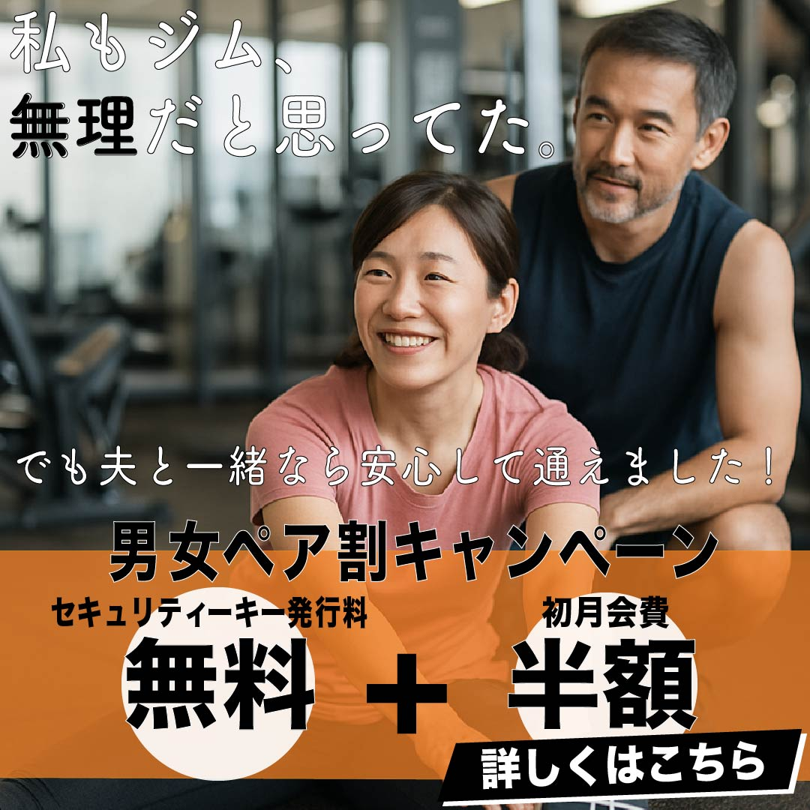

PROFILE
尾花祐香
福岡県出身
心理学科卒業後、美容部員と
美容クリニックでのカウンセラー職を経験
今後は目に見えないお客さまへのアプローチに関わり、企業の発展に携わりたいと考えています
現在、職業訓練校にてWebデザインや動画編集を学び中
FAVORITE
旅行
国内だと京都、海外だと韓国が好きです
ひとり旅だと御朱印巡りが多いです
写真動画を帰ってきて編集して思い出に浸っています
美容
日常から化粧品・洋服等トレンド流行情報集めを楽しんでいます
なんでも試したくなる性格です
SKILL
WORKS
課題1
「水のような日焼け止め」の先行販売のための広告
広告物
郵便DMとしても使えるフライヤ-A5両面
告知したいこと
今までにない「水のような」テクスチャーをアピールしたい
ブランド説明
MARKは歴史ある日本のコスメティックブランド透明の水のような軽やかなテクスチャーの日焼け止めの開発に成功し特許取得主力商品としてアピール
| コンセプト | まるで水 |
|---|---|
| ターゲット | 20〜30代女性 |
| ペルソナ | 23歳 会社員 新卒 女性 肌質：脂性肌 夕方びになると皮脂べたつきテカリが気になる 朝は時間に余裕がない 環境の変化で、ストレスによるニキビができることもある 働き出してお金に余裕ができ始め、コスメにもお金をかけようと思い始めた 基礎化粧品のデパコスを自分で買うのは初めて |
課題2
フィットネスクラブ
企画
男女ペア割キャンペーン エニタイムの利用者は男性の割合が高く、女性客が気軽に通いづらいため、 既に会員の男性が女性を連れてくることで女性客を増やし、継続してもらうための企画 男女ペアにすることで 女性も安心して通いやすくなる 一人よりも長期的に続けるためのモチベーションが保ちやすい
ターゲット
30~40代 専業主婦
工夫した点
一目見て何がお得なのかが分かるような見せ方 色：情報欄は元気さ、エネルギッシュさ、親しみを感じるオレンジを選択その他は白と黒に絞った 人物画像：欧米人ではなくアジア人を使用することでイメージしやすく親近感を得られる キャッチコピー：共感性を求めた。フォントも他と変えることで心の声のような表現“無理”というワードで興味を惹かせる